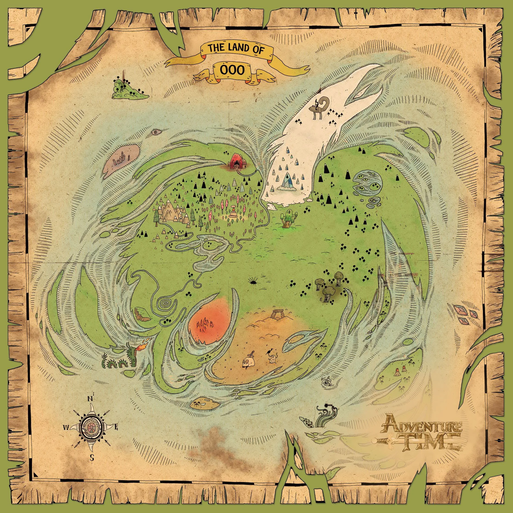

OOO
The world of "Adventure Time" is a vibrant and whimsical landscape known as the Land of Ooo, filled with diverse kingdoms, peculiar creatures, and a rich tapestry of lore. Set in a post-apocalyptic future, Ooo features colorful environments like the Candy Kingdom, the Fire Kingdom, and the Ice Kingdom, each with its own unique inhabitants and cultures. The land is a mix of magical elements and remnants from the old world, leading to a surreal atmosphere where the fantastical coexists with the absurd. Ooo is not only a playground for adventures but also a reflection of deeper themes such as friendship, growth, and the passage of time. Throughout the series, the characters encounter bizarre challenges, uncover hidden histories, and explore the consequences of their actions in a world that is as whimsical as it is poignant. This captivating setting serves as the backdrop for the emotional and philosophical journeys of its inhabitants, making Ooo a character in its own right.
The Kindgoms of OOO
The kingdoms of "Adventure Time" are a vital part of the rich tapestry of the Land of Ooo, each offering its own unique culture, inhabitants, and challenges. The Candy Kingdom, ruled by Princess Bubblegum, is a sweet paradise filled with candy-themed characters and vibrant landscapes. In contrast, the Fire Kingdom is home to fierce fire creatures and ruled by the volatile Flame King. The Ice Kingdom, governed by the Ice King, showcases a wintry realm filled with snow and ice, often reflecting his emotional turmoil. Other notable kingdoms include the Mushroom Kingdom, known for its whimsical fungi, and the Nightosphere, a dark and chaotic dimension ruled by Marceline's father, Hunson Abadeer. Each kingdom not only contributes to the series' diverse visual palette but also enriches the narrative, providing a backdrop for themes of friendship, conflict, and personal growth as characters navigate the complexities of their world.
Noteable Kingdoms
- Candy Kingdom
- Fire Kingdom
- Ice Kingdom
- Slime Kingdom
- Nightosphere